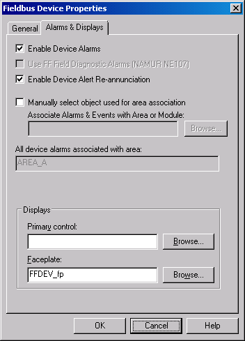
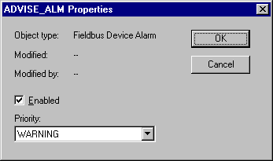

Enabling device alarms
Fieldbus and HART device alarms are enabled by default when you add a new device to the control network from the Explorer library.
You can change the enabled/disabled status of the alarms for the device as a whole and for each individual alarm. The enable/disable setting for the device is on the Alarms & Displays tab of the device Properties dialog. To access the setting:
Right-click the device.
Click Properties.
Click the Enable Device Alarms check box. The figure below shows the Fieldbus Device Properties dialog. The HART Device Properties dialog is similar.

The Enable Device Alarms option determines whether the alarms are available within the DeltaV system. If this check box is not checked, the alarms will not be available through parameter browsers. In addition, the individual alarms do not appear in the Explorer and device alarm communications will not be attempted with the device. If you disable device alarms for a device, any configurable properties of the individual alarms (alarm enable and priority) are discarded. If the device alarms for a device are subsequently enabled again, the configurable properties are set to their default values.
You enable or disable individual alarms as follows:
Right-click the alarm.
Click Properties.
Click the Enabled check box.

The enabled/disabled property for the individual alarms corresponds to the .ENAB field for the alarm. Control modules, OPC client applications and Operators using displays can change the .ENAB field for the alarm.
For fieldbus devices, changing the .ENAB field for a device alarm does not change the corresponding alarm enable status in the field device. Also note that when you download the field device (along with the device alarms), the corresponding enable is set to be consistent with the setting in the field device.
In general, it is possible to read and write the parameter fields of device alarms from control modules that run in the same node. This type of reading and writing is typically limited to enabling or disabling certain device alarms based on the operating state of the module. For example, you might want to disable advisory alarms, which depend on the process to be active to work properly, when the unit is idle.